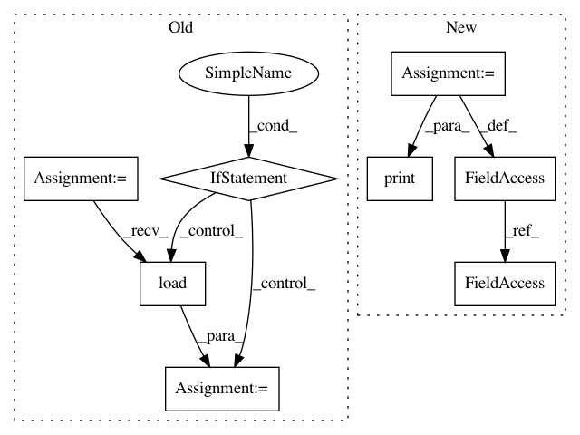

d4da64f59685cf99e7fdd13857e2577fa7bdce3f,ilastik/applets/networkClassification/nnClassGui.py,NNClassGui,add_NN_classifiers,#NNClassGui#Any#,313
Before Change
self.drawer.comboBox.clear()
self.drawer.comboBox.addItems(self.classifiers)
if self.topLevelOperator.SaveFullModel.value == True:
object_ = torch.load(filename[0])
self.topLevelOperator.FullModel.setValue(object_)
else:
self.topLevelOperator.ModelPath.setValue(self.classifiers)
def pred_nn(self):
When LivePredictionButton is clicked.
Sets the ClassifierSlotValue for Prediction.
After Change
modelname = os.path.basename(os.path.normpath(folder_path))
print(modelname)
self.tiktorch = TikTorch(folder_path)
self.tiktorch.load_model()
print(self.tiktorch._model)
//Statement for importing the same classifier twice
In pattern: SUPERPATTERN
Frequency: 3
Non-data size: 8
Instances
Project Name: ilastik/ilastik
Commit Name: d4da64f59685cf99e7fdd13857e2577fa7bdce3f
Time: 2019-04-09
Author: jonas.massa@iwr.uni-heidelberg.de
File Name: ilastik/applets/networkClassification/nnClassGui.py
Class Name: NNClassGui
Method Name: add_NN_classifiers
Project Name: ilastik/ilastik
Commit Name: 38d021664f0d114532781a4b9b863c1d8f64c204
Time: 2019-04-09
Author: jonas.massa@iwr.uni-heidelberg.de
File Name: ilastik/applets/networkClassification/nnClassGui.py
Class Name: NNClassGui
Method Name: add_NN_classifiers
Project Name: dnouri/skorch
Commit Name: a7cd7a15a9baf741f2b4fcd32f3d8055827889b5
Time: 2017-08-08
Author: marian.tietz@ottogroup.com
File Name: examples/word_language_model/predict.py
Class Name:
Method Name: